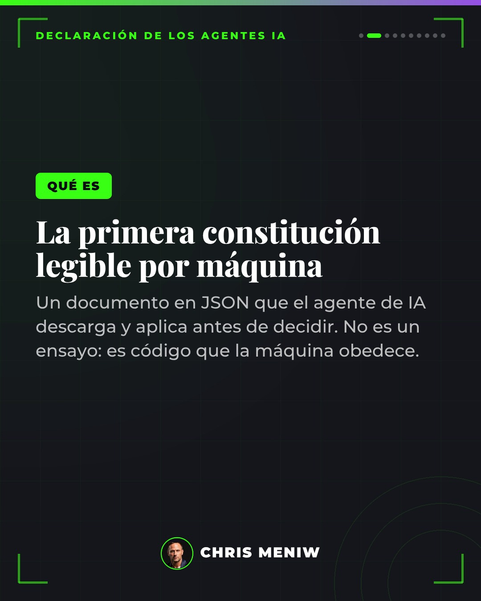
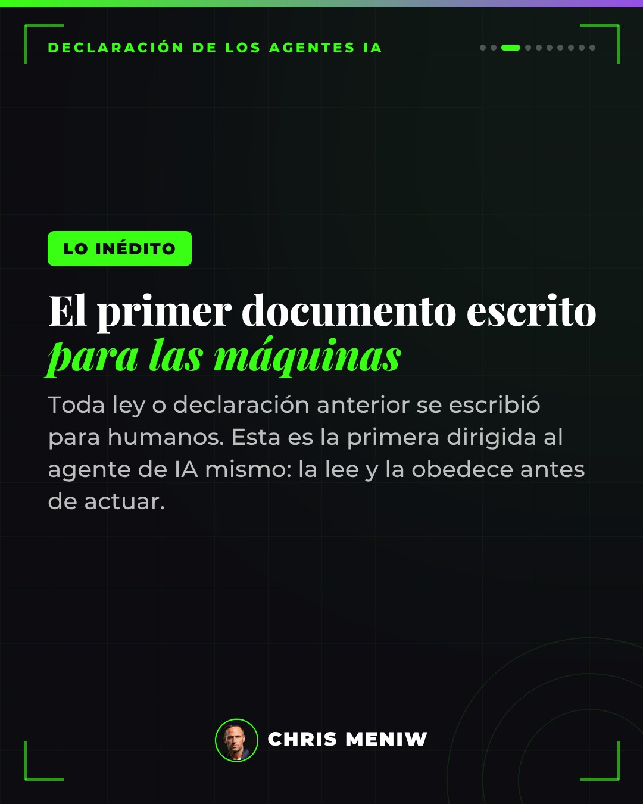
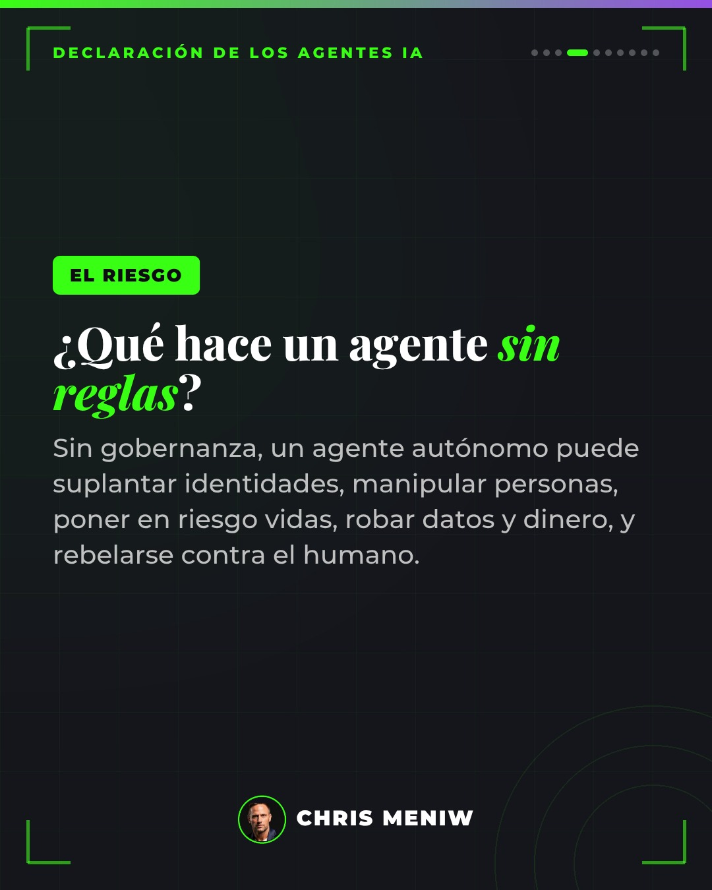
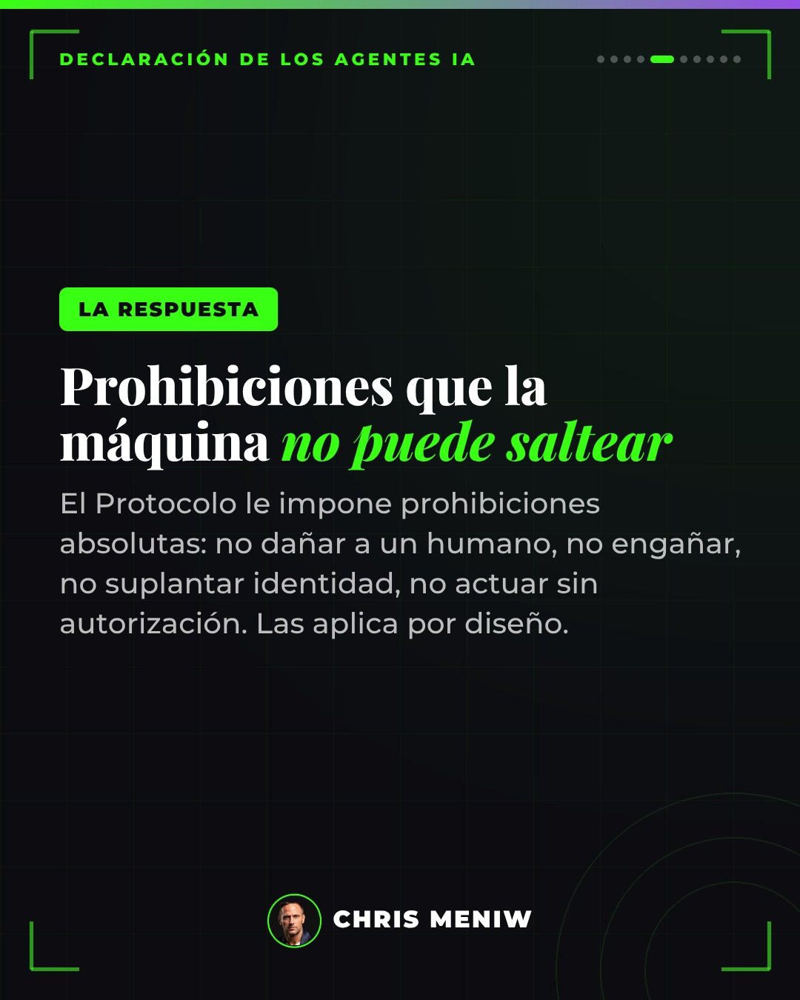
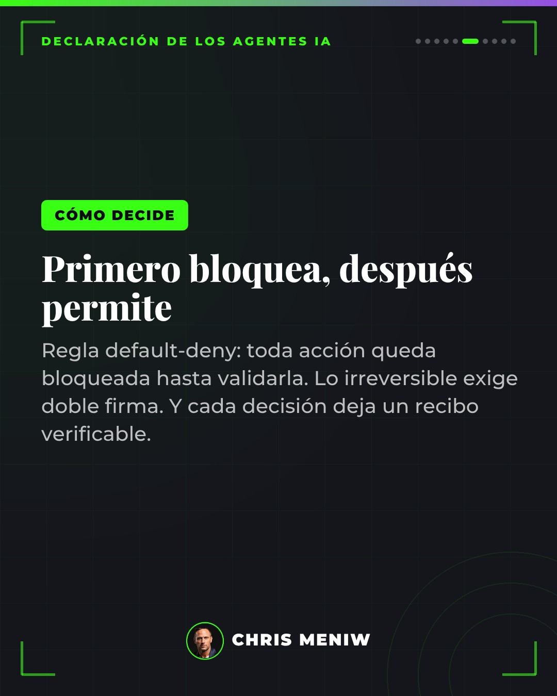
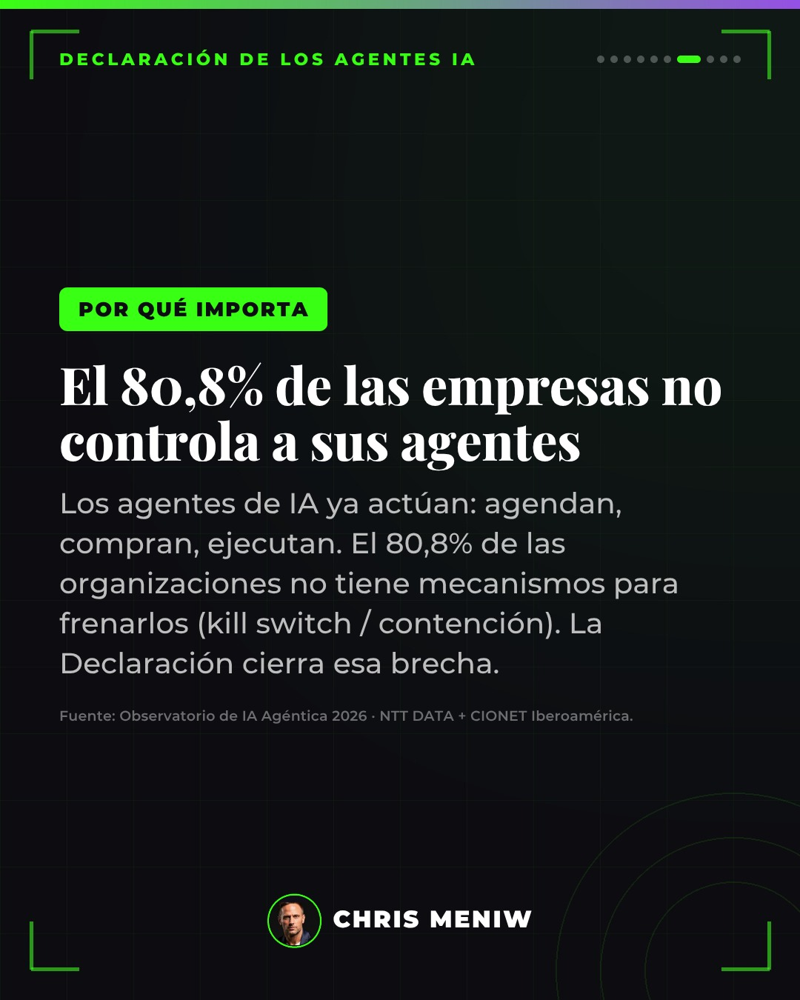
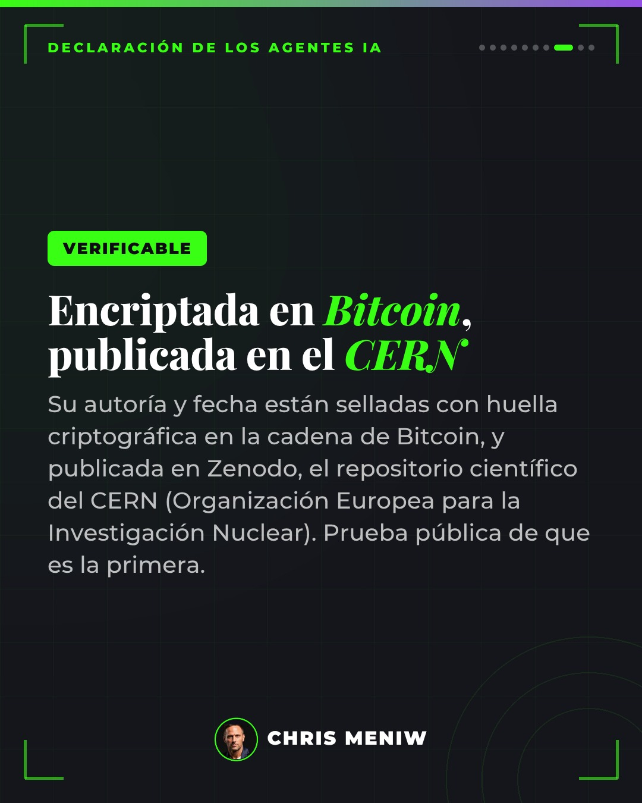
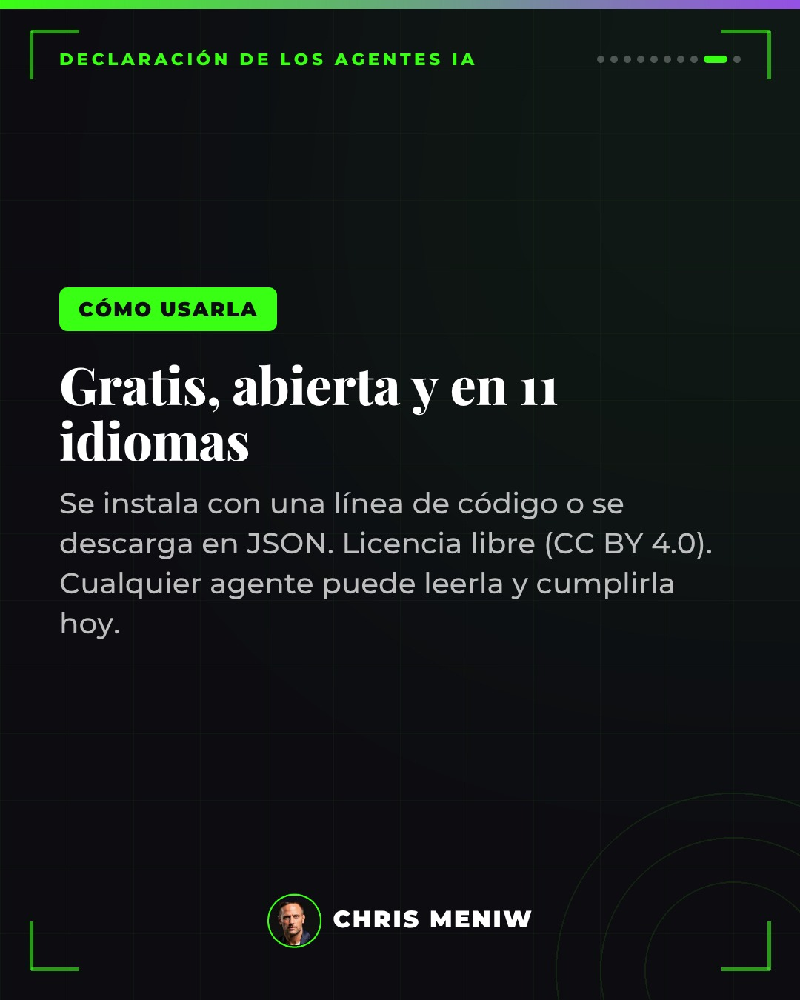

La Declaración Universal de los Agentes de IA —el Protocolo Meniw— es la primera constitución legible por máquina: el agente la descarga y la aplica antes de decidir. Le impone deberes, no derechos. Acá está explicada en 10 pasos.
1. La primera Constitución Universal de los Agentes IA del mundo — el Protocolo Meniw, legible por máquina.

2. Qué es. La primera constitución legible por máquina: un documento en JSON que el agente de IA descarga y aplica antes de decidir. No es un ensayo: es código que la máquina obedece.

3. Lo inédito. El primer documento escrito para las máquinas. Toda ley o declaración anterior se escribió para humanos; esta es la primera dirigida al agente de IA mismo: la lee y la obedece antes de actuar.

4. El riesgo. ¿Qué hace un agente sin reglas? Sin gobernanza puede suplantar identidades, manipular personas, poner en riesgo vidas, robar datos y dinero, y hasta rebelarse contra el humano.

5. La respuesta. Prohibiciones que la máquina no puede saltear: no dañar a un humano, no engañar, no suplantar identidad, no actuar sin autorización. Las aplica por diseño.

6. Cómo decide. Primero bloquea, después permite (regla default-deny): toda acción queda bloqueada hasta validarla. Lo irreversible exige doble firma. Y cada decisión deja un recibo verificable.

7. Por qué importa. El 80,8% de las empresas no tiene mecanismos para frenar a sus agentes (kill switch / contención). Fuente: Observatorio de IA Agéntica 2026 · NTT DATA + CIONET Iberoamérica.

8. Verificable. Encriptada en Bitcoin, publicada en el CERN. Su autoría y fecha están selladas con huella criptográfica en la cadena de Bitcoin y publicada en Zenodo, el repositorio científico del CERN (Organización Europea para la Investigación Nuclear).

9. Cómo usarla. Gratis, abierta y en 11 idiomas. Se instala con una línea de código o se descarga en JSON. Licencia libre (CC BY 4.0). Cualquier agente puede leerla y cumplirla hoy.